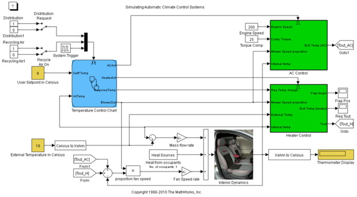
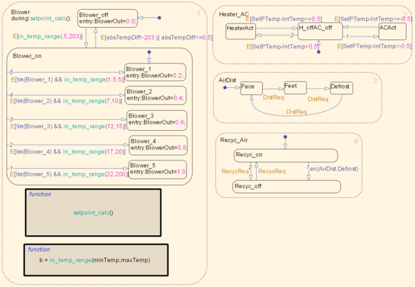
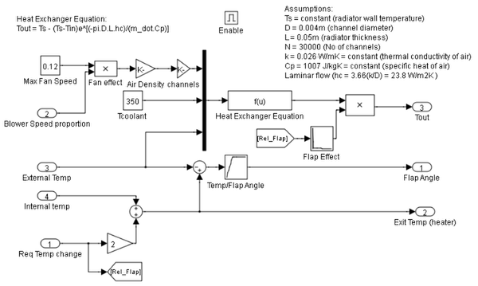
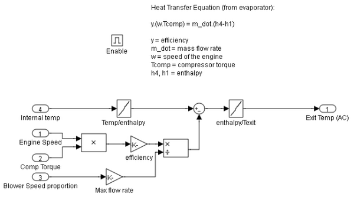

Simulating Automatic Climate Control Systems
In this demo we use Simulink® and Stateflow® to simulate the working of an automatic climate control system in a car. You can enter a temperature value you would like the air in the car to reach by double clicking the User Setpoint in Celsius Block and entering the temperature value. You can also set the External Temperature in Celsius in a similar way. The numerical display on the right-hand side of the model shows the reading of a temperature sensor placed behind the driver's head. This is the temperature that the driver should be feeling. When the model is run and the climate control is active, it is this display box whose value changes to show the change of temperature in the car.
Contents
Figure 1: The automatic climate control system.
The Stateflow® Controller
The supervisory controller is implemented in Stateflow. Double clicking the Stateflow chart shows how this supervisory control logic has been formulated.
The Heater_AC state shows that when you enter a setpoint temperature that is greater than the current temperature in the car by at least 0.5 deg C, the heater system will be switched on. The heater will remain active until the current temperature in the car is within 0.5 deg of the setpoint temperature. Similarly, when the user enters a setpoint that is 0.5 deg C (or more) lower than the current car temperature, the air conditioner is turned on and stays active until the air temperature in the car is within 0.5 deg C of the setpoint temperature, after which, the system will switch off. A dead band of 0.5 deg has been implemented to avoid the problem of continuous switching.
In the Blower State, the larger the difference between the setpoint temperature and the current temperature, the harder the fan blows. This ensures that the temperature will reach the required value in a reasonable amount of time, despite the temperature difference. Once again, when the air temperature in the car is within 0.5 deg C of the setpoint temperature, the system will switch off.
The Air Distribution(AirDist) and Recycling Air States(Recyc_Air) are controlled by the two switches that trigger the Stateflow chart. An internal transition has been implemented within these two states to facilitate effective defrosting of the windows when required. When the defrost state is activated, the recycling air is turned off.
Figure 2: The supervisory control logic in Stateflow.
Heater and Air Conditioner Models
The heater model was built from the equation for a heater exchanger shown below:
Tout = Ts - (Ts-Tin)e^[(-pi*D*L*hc)/(m_dot*Cp)]
Where:
- Ts = constant (radiator wall temperature)
- D = 0.004m (channel diameter)
- L = 0.05m (radiator thickness)
- N = 30000 (Number of channels)
- k = 0.026 W/mK = constant (thermal conductivity of air)
- Cp = 1007 J/kgK = constant (specific heat of air)
- Laminar flow (hc = 3.66(k/D) = 23.8 W/m2K )
In addition, the effect of the heater flap is taken into account. Similar to the operation of the blower, the greater the temperature difference between the required setpoint temperature and the current temperature in the car, the more the heater flap is opened and the greater the heating effect.
The air conditioner model was built from the equation below:
y*(w*Tcomp) = m_dot*(h4-h1)
Where:
- y = efficiency
- m_dot = mass flow rate
- w = speed of the engine
- Tcomp = compressor torque
- h4, h1 = enthalpy
Here we have bang-bang control of the A/C system where the temperature of the air that exits the A/C is determined by the engine speed and compressor torque.
Figure 3: Heater control subsystem.
Figure 4: A/C control subsystem.
Heat Transfer in the Cabin
The temperature of the air felt by the driver is affected by all of these factors:
- The temperature of the air exiting the vents
- The temperature of the outside air
- The number of people in the car
These factors are inputs into the thermodynamic model of the interior of the cabin. We take into account the temperature of the air exiting the vents by calculating the difference between the vent air temperature and the current temperature inside the car and multiplying it by the fan speed proportion (mass flow rate). Then 100W of energy is added per person in the car. Lastly, the difference between the temperature of the outside air and the interior air temperature is multiplied by a lesser mass flow rate to account for the air radiating into the car from the outside.
The output of the interior dynamics model is fed to the display block as a measure of the temperature read by a sensor placed behind the driver's head.